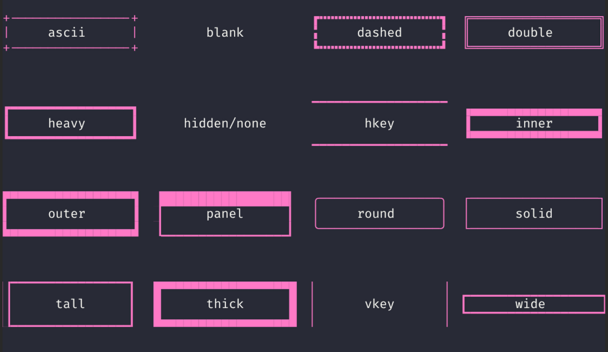

BaseModule
This is the base class for all the modules used in the dashboard, every parameter defined here is accepted by all the modules unless otherwise specified.
BaseModule
¶
| PARAMETER | DESCRIPTION |
|---|---|
enabled
|
Enable/disable the widget
|
refresh_interval
|
How often to update module data, accepts a value in seconds or string with a time unit.
TYPE:
|
align_horizontal
|
Horizontal alignment of the text
TYPE:
|
align_vertical
|
Vertical alignment of the text
TYPE:
|
color
|
Color of the text
TYPE:
|
border
|
Border of the widget
TYPE:
|
title
|
Title of the widget
TYPE:
|
title_align
|
Alignment of the title
TYPE:
|
title_background
|
Background color of the title
TYPE:
|
title_color
|
Color of the title
TYPE:
|
title_style
|
Style of the title
TYPE:
|
subtitle
|
Subtitle of the widget
TYPE:
|
subtitle_align
|
Alignment of the subtitle
TYPE:
|
subtitle_background
|
Background color of the subtitle
TYPE:
|
subtitle_color
|
Color of the subtitle
TYPE:
|
subtitle_style
|
Style of the subtitle
TYPE:
|
remote_host
|
Remote host IP or FQDN
TYPE:
|
remote_port
|
Remote host SSH port
TYPE:
|
remote_username
|
Remote host SSH username
TYPE:
|
remote_password
|
Remote host SSH password
TYPE:
|
remote_key
|
Remote host SSH key
TYPE:
|
ssh_strict_host_key_checking
|
Control host key verification behaviour
TYPE:
|
ssh_ignore_known_hosts_file
|
Ignore known hosts file (suppresses host key changed warning)
TYPE:
|
Styling¶
All the styling parameters shown above directly control the behaviour of Textual framework, the information below is taken from their CSS reference.
Color¶
A color should be in one of the following formats:
- a recognised named color (e.g.,
red); - a 3 or 6 hexadecimal digit number representing the RGB values of the color (e.g.,
#F35573); - a 4 or 8 hexadecimal digit number representing the RGBA values of the color (e.g.,
#F35573A0); - a color description in the RGB system, with or without opacity (e.g.,
rgb(23, 78, 200)); - a color description in the HSL system, with or without opacity (e.g.,
hsl(290, 70%, 80%));
Border¶
Must be passed as a tuple border: [style, color]
style can take any of the following values:
| Border type | Description |
|---|---|
ascii |
A border with plus, hyphen, and vertical bar characters. |
blank |
A blank border (reserves space for a border). |
dashed |
Dashed line border. |
double |
Double lined border. |
heavy |
Heavy border. |
hidden |
Alias for "none". |
hkey |
Horizontal key-line border. |
inner |
Thick solid border. |
none |
Disabled border. |
outer |
Solid border with additional space around content. |
panel |
Solid border with thick top. |
round |
Rounded corners. |
solid |
Solid border. |
tall |
Solid border with additional space top and bottom. |
thick |
Border style that is consistently thick across edges. |
vkey |
Vertical key-line border. |
wide |
Solid border with additional space left and right. |

All border types (taken from Textual border style reference)
Text style¶
See: Textual <text-style> Syntax
Can be the value none for plain text with no styling,
or any space-separated combination of the following values:
| Value | Description |
|---|---|
bold |
Bold text. |
italic |
Italic text. |
reverse |
Reverse video text (foreground and background colors reversed). |
strike |
|
underline |
Underline text. |